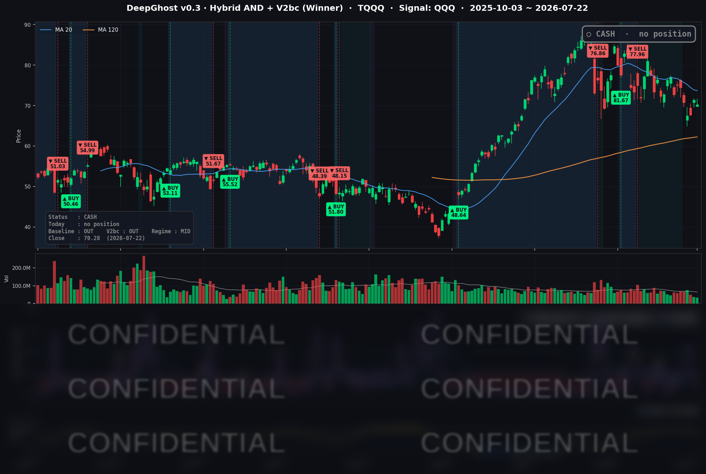

👻 매일 시그널과 히스토리를 홈페이지에서 한눈에 → www.ghostai.co.kr
어제 말씀드렸지만, 국장이든 미장이든 돈이 말랐습니다. 시장 내부적으로 순환만 일어날 뿐 외부에서 자금이 유입되지 않으니 횡보 또는 하락 추세가 유지됩니다. 이렇게 된 가장 큰 이유는 "금리" 입니다.
📊 오늘의 매매 신호
| 항목 | 내용 |
|---|---|
| 오늘 할 일 | ✅ 아무것도 안 해도 됩니다 |
| 포지션 상태 | 💵 현금 보유 중 (OUT OF POSITION) |
| 현금 보유 기간 | 2026-06-25 ~ 2026-07-22 (27일) |
| TQQQ 종가 | $70.28 (−1.53%) |
신규 매수·매도 신호 없이 현금 대기가 이어졌습니다. 전략은 오늘도 관망 상태를 유지합니다.
TQQQ 시그널 — OUT OF POSITION
현재 상태: 현금 보유 중 | 신규 진입·청산 신호 없음

전략(모델 가상 트랙)은 TQQQ를 계속 현금으로 두고 있습니다. QQQ 내부 지표는 이론상 매수 후보 구간까지 내려왔지만, 추세 확증에 필요한 조건이 아직 채워지지 않아 진입 신호가 나오지 않았습니다. 유가 급등과 금리 상승이 성장주를 누른 오늘 같은 세션에서는, 이 "서두르지 않는 관망"이 결과적으로 지수 되돌림을 피하는 방향과 맞아떨어졌습니다. 관망도 전략의 한 상태입니다.
오늘 미국 시장 — 시황 요약
지수 마감
| 지수 | 종가 | 등락률 |
|---|---|---|
| S&P 500 | 7,498.96 | −0.14% |
| 나스닥 종합 | 25,690.90 | −0.57% |
| 다우존스 | 52,218.58 | −0.01% |
| 러셀 2000 | 2,959.94 | −0.92% |
전형적인 소폭 되돌림 세션이었습니다. 장 마감 후 발표되는 알파벳·테슬라 실적을 앞둔 관망 속에 나스닥이 상대적으로 약했고, 다우는 사실상 보합이었습니다. 소형주(러셀 2000)가 가장 부진해 위험 선호가 살짝 위축된 하루였습니다. 전날 반도체 급등 랠리 이후 폭넓은 차익 실현이 나타났습니다.
국채 금리 동향
| 만기 | 수익률 | 전일 대비 |
|---|---|---|
| 3개월 | 3.745% | +1.5bp |
| 10년 | 4.657% | +2.9bp |
| 30년 | 5.147% | +1.7bp |
국채 금리는 곡선 전 구간이 완만히 올랐습니다(채권값 약세). 국제유가 급등이 인플레이션 재점화 우려를 자극한 것이 배경입니다. 다만 상승폭이 2~4bp 수준으로 제한적이라 지수 급락으로 번지지는 않았습니다. 장단기 금리차(10년−3개월 +91bp)는 정상적인 우상향을 유지해 경기 침체 신호는 보이지 않았습니다.
연준 발언 & 금리 패스
이날 연준 위원의 공식 발언은 없었습니다. 연준은 7월 FOMC(7/28-29)를 앞두고 블랙아웃 기간(7/18-7/30)에 들어가 있어, 정책 관련 공개 발언과 인터뷰가 금지된 상태입니다. 시장은 이번 회의에서 금리 동결(3.50-3.75% 유지)을 컨센서스로 보고 있으나, 유가 급등이 인플레이션 상방 리스크를 다시 부각하며 단기 인하 기대는 뒤로 밀렸습니다.
오늘의 핵심 이슈
- 국제유가 급등 — 미–이란 군사 긴장과 호르무즈 해협 운송 차질 우려로 WTI는 3.44% 오른 $87.83, 브렌트는 4.99% 뛴 $95.55로 약 6주 최고치 부근까지 급등했습니다. 안전자산인 금도 함께 올랐습니다(+1.28%, $4,123.30). 이 에너지발 인플레이션 우려가 오늘의 금리 상승과 성장주 역풍의 배경입니다.
- 빅테크 실적 대기 — 알파벳과 테슬라가 장 마감 후 실적을 발표했습니다. 테슬라는 매출 $28.2B(+26%)에 분기 인도 신기록을 세웠지만 주당순이익이 컨센서스를 크게 밑돌았고(영업이익 −57%), 알파벳은 매출 $119.8B(+24%)로 시장 기대를 웃돌았습니다. 두 종목의 CSV 종가는 실적 발표 前 정규장 가격이라, 실적 갭은 다음 거래일(7/23)에 반영됩니다.
- 반도체 랠리 되돌림 — 전날 급등했던 반도체가 종목별로 갈렸습니다. NVDA(+2.30%)·AVGO(+2.67%)·QCOM(+1.23%)은 추가 강세였던 반면, 어닝으로 급등했던 INTC(−2.68%)·MU(−1.17%)는 차익 실현으로 되돌려졌습니다.
변동성 & 투자심리
VIX는 16.64로 전일(17.05) 대비 오히려 2.41% 내렸습니다. 지수가 소폭 밀렸는데도 변동성이 낮아진 것은, 시장이 이번 되돌림을 패닉이 아닌 정상적인 관망으로 소화하고 있다는 뜻입니다. 공포·탐욕 지수는 당일 교차검증이 어려워 단정하지 않았으나, VIX 16대·정상 금리 곡선·유가발 부분 로테이션을 종합하면 심리는 중립~완만한 리스크오프로 읽힙니다.
매크로 & 원자재
| 항목 | 가격 | 등락률 |
|---|---|---|
| WTI 원유 | $87.83 | +3.44% |
| 브렌트 원유 | $95.55 | +4.99% |
| 금 | $4,123.30 | +1.28% |
미–이란 긴장과 호르무즈·홍해 운송 경로 리스크가 원유 공급 우려를 키웠습니다. 다만 실제 물리적 공급 부족이라기보다 지정학 프리미엄 성격이 강한 랠리로 해석됩니다.
주요 종목 동향
| 종목 | 종가 | 등락률 | 비고 |
|---|---|---|---|
| AAPL | $325.89 | −0.56% | 대형주 관망 속 소폭 조정 |
| NVDA | $212.06 | +2.30% | AI 반도체 강세, 커버리지 최상위 상승 |
| MSFT | $390.34 | −1.86% | 플랫폼주 약세 |
| GOOGL | $342.09 | −1.46% | 장 마감 후 Q2 실적(매출 +24% 서프라이즈, 종가는 발표 前) |
| META | $627.17 | −2.58% | 커버리지 최대 낙폭, 고밸류 플랫폼주 차익 실현 |
| AMZN | $244.85 | −1.09% | 소폭 조정 |
| TSLA | $374.01 | −1.30% | 장 마감 후 Q2 실적(매출 신기록이나 EPS 컨센 하회, 종가는 발표 前) |
| NFLX | $68.53 | −0.20% | 사실상 보합 |
| AVGO | $396.81 | +2.67% | 반도체 강세, 커버리지 최상위권 상승 |
| QCOM | $175.63 | +1.23% | 반도체 강세 동참 |
| INTC | $102.62 | −2.68% | 전일 어닝 급등 되돌림, 커버리지 최대 낙폭 |
| MU | $959.48 | −1.17% | 전일 어닝 급등 되돌림, 여전히 고점권 |
Ghost.AI — Quantitative AI Investment
Model: DeepGhost v0.3 | Transformer-Based Deep Learning
Coverage: 13 tickers | Updated every trading day after US market close
⚠️ 본 자료는 정보 제공 목적으로만 작성되었으며 투자 권유가 아닙니다. 모든 투자의 책임은 투자자 본인에게 있습니다. 과거 성과가 미래 수익을 보장하지 않습니다.
[유의사항]
- 본 서비스는 불특정 다수를 대상으로 발행되는 단방향 정보 제공 서비스이며, 투자자 개인의 재산 상황·투자 목적·위험 선호도를 반영한 개별 투자 조언이 아닙니다.
- 고스트에이아이 주식회사는 고객과 쌍방향 의사소통(개별 상담, 맞춤형 자문 등)을 제공하지 않습니다.
- 본 콘텐츠는 투자 권유 또는 매매 주문의 청약·청약의 권유에 해당하지 않으며, 최종 투자 판단 및 그에 따른 손익의 책임은 전적으로 투자자 본인에게 있습니다.
고스트에이아이 주식회사